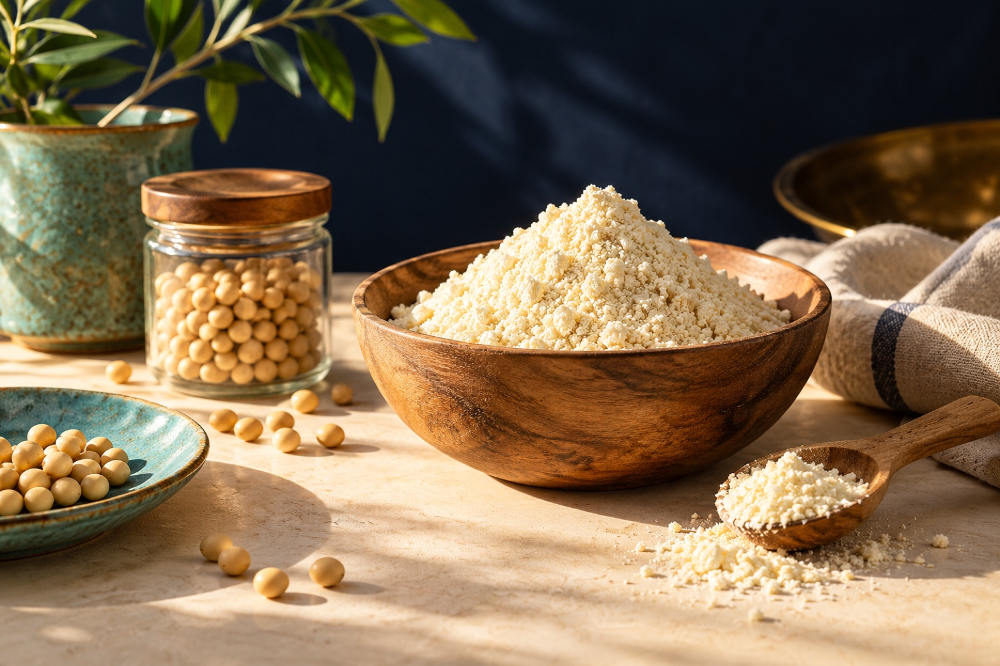
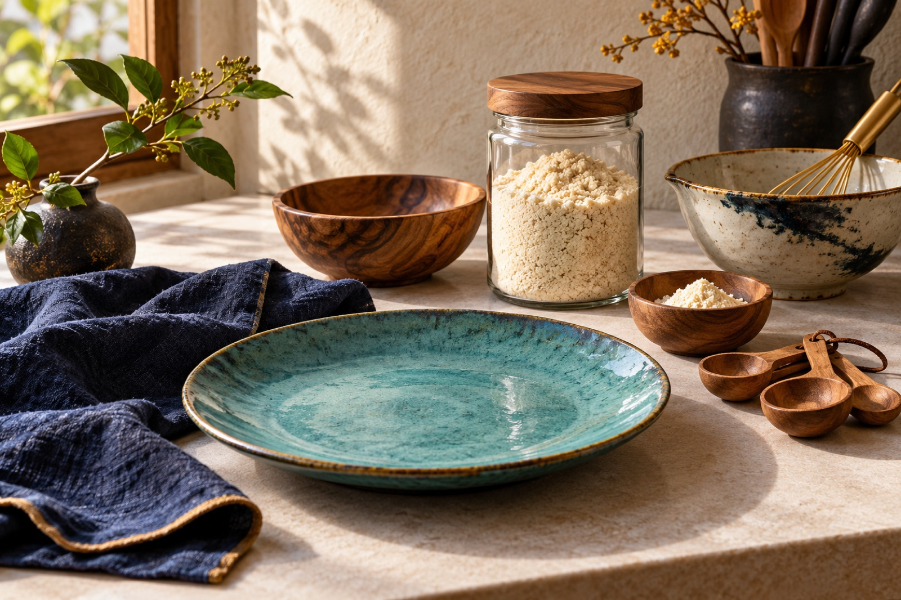
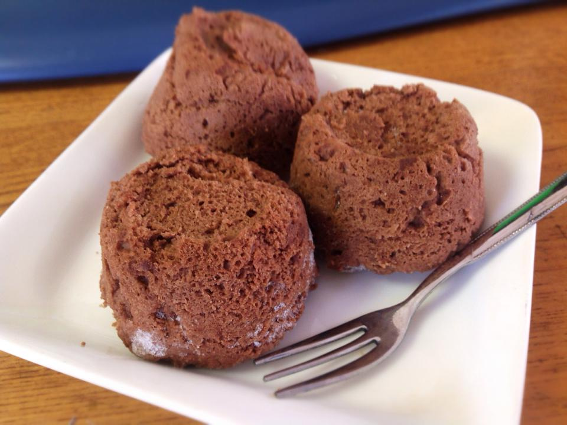
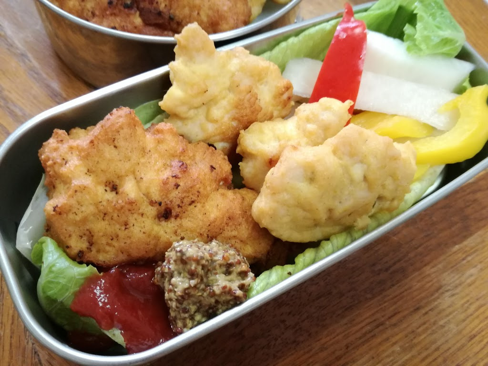
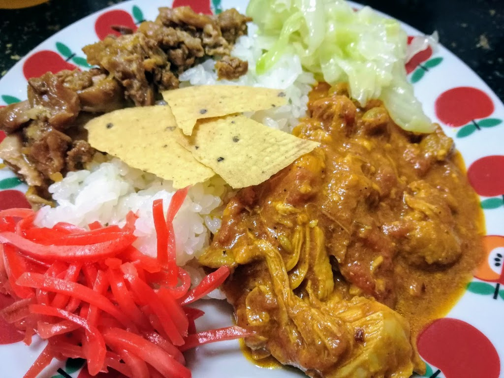

材料・手順・元記事
各料理からは、材料・手順・元記事の案内へ移動できます。台所でスマホやタブレットを開いたまま、材料を確かめ、手順に戻り、元になった記事をたどれます。
選び方・使い方・失敗の直し方から、毎日のごはんとおやつまで
買ったままのおからパウダーを、食べたい一品へ。50の料理と作り方に、50話の料理漫画を合わせた改訂版です。
発売情報へ改訂版はAmazonで販売中です。
価格は500円（税込）です。Amazonの商品ページからお求めいただけます。


おからパウダーを使い始めた頃、私は10kgの業務用を買いました。期限内に食べ切れず、おすそ分けしたのが最初の失敗です。
安い袋を選ぶより、作りたい料理に合う粉を、使い切れる量で買う。この改訂版は、その考え方を出発点にしています。2021年に出した『健康おからパウダー節約レシピ』をもとに、著者ブログで紹介してきた料理も加えて組み直しました。
「何を作ればいいかわからない」
「パンケーキがパサつく」
「大袋を買ったけれど使い切れない」
そんな悩みから、今日作りたい一品を探すための実用書です。
料理と作り方に加えて、50話の料理漫画を収録しました。
各料理からは、材料・手順・元記事の案内へ移動できます。台所でスマホやタブレットを開いたまま、材料を確かめ、手順に戻り、元になった記事をたどれます。
料理名だけでなく、卵・豆腐・鶏肉などの主な材料や、電子レンジ・フライパン・揚げ鍋などの調理器具からも探せます。
料理の前と後ろに、使い切るための話を置きました
料理の前には、おからパウダーを選ぶ・買う・保存する考え方と、パサつき・べたつき・膨らまない時の見直し方があります。うまくいかなかった時に、粉を足す前に何を確かめるかを順に書きました。
料理の後ろでは、買い物と食費の組み立て方、一食・弁当・作り置きへのつなげ方を扱います。栄養表示や保存の疑問は、手元の袋の表示を見ながら確かめる形にしています。
作りたいものから探せるように、料理をカテゴリごとにまとめています。



おからココア蒸しパン、食パン風おから蒸しパン、熟したバナナのおからオオバコ蒸しパンなど。朝ごはんに食べたい一品から使い道を広げます。
ミニパンケーキ、おからのきなこ団子、おから団子入りおしるこ、レンジおからクッキーなど。甘いものも適度に楽しめます。
卵とおからパウダーの基本のお好み焼き、長芋のお好み焼き、無塩手打ちうどん、ほうとう煮込みまで。なじみのある粉ものに使います。
おから豆腐チキンナゲット、やわらかい豆腐鶏つくね、レンジで作るキャベツ焼売など。夕食の中心になるおかずです。
手羽元唐揚げ、油淋鶏、ちくわ天、牡蠣フライなど。生地に混ぜるだけでなく、衣として使う方法を集めました。
インド風チキンカレー、かぼちゃシチュー、手羽大根を使う和風カレーなど。リメイクや調理済み材料のアレンジも含みます。
鶏そぼろ入りスプーンコロッケと、おからパウダー入りポテトサラダ。食卓に添える小さなおかずです。
手元の一袋を使い切るための、4ページの記入式ノートです。本の購入、レビュー、LINE登録とは関係なく、どなたでも使えます。
保存や期限は、このノートではなく商品の表示に従ってください。
無料ノートをダウンロード全部を一度に取り入れなくて大丈夫です。今ある材料と、今日台所に立てる時間に合う一品から。食べる楽しみを残しながら、自分に合う使い方を見つけてもらえたらうれしいです。
Kindleで読む